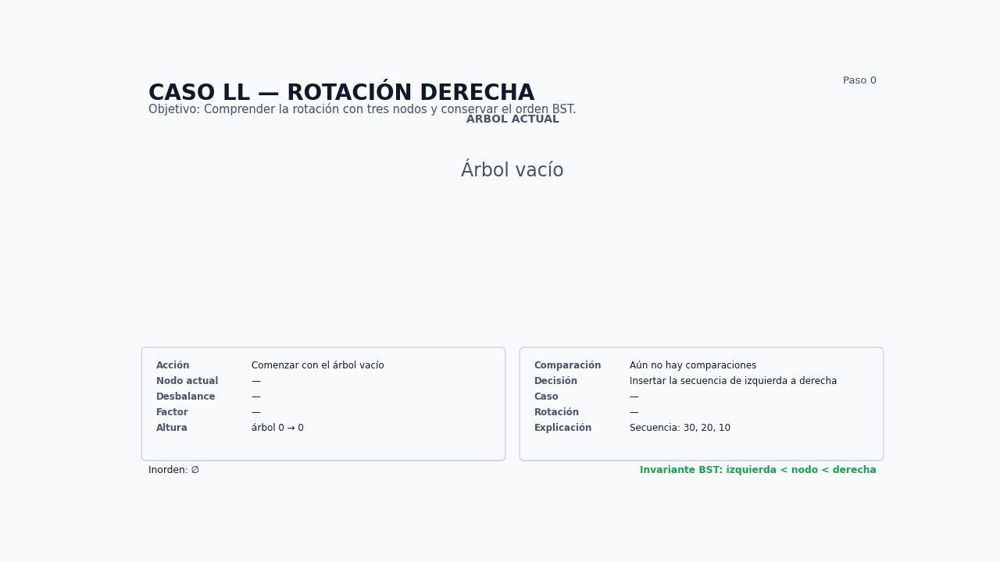
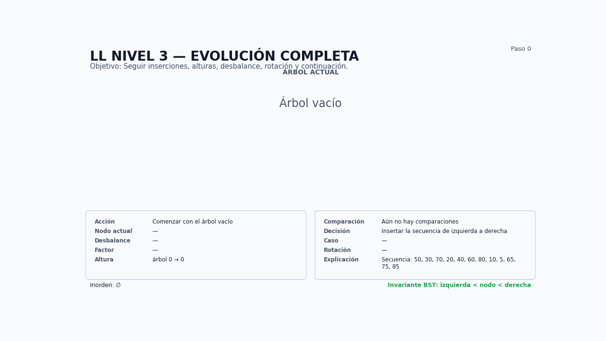
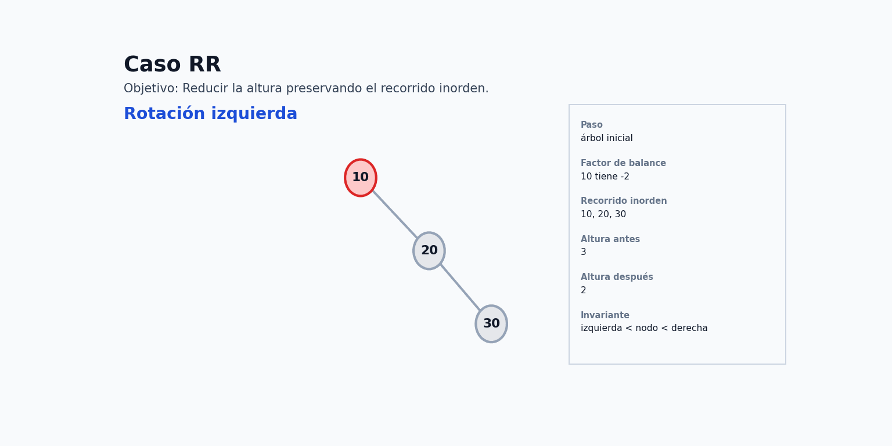
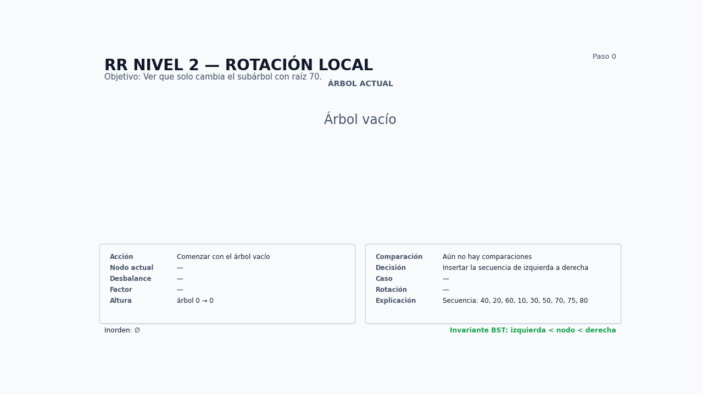
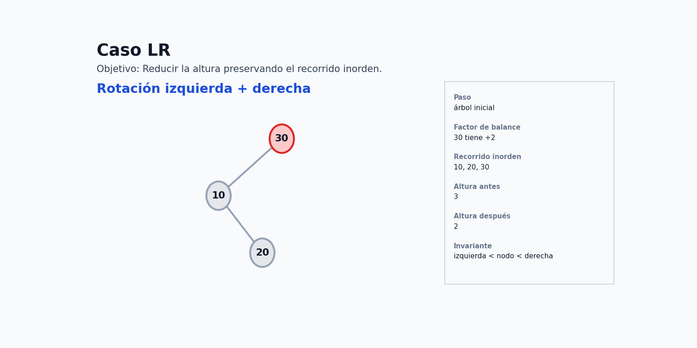
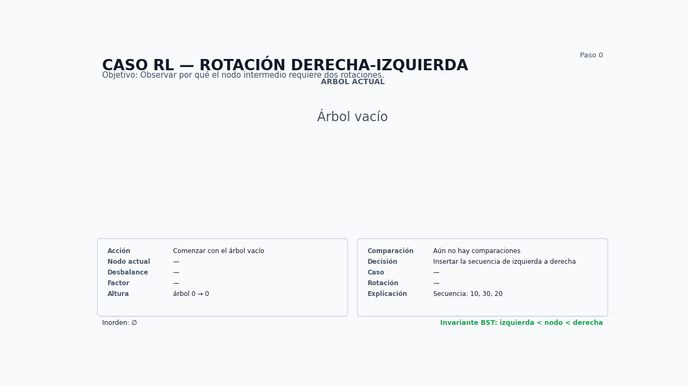
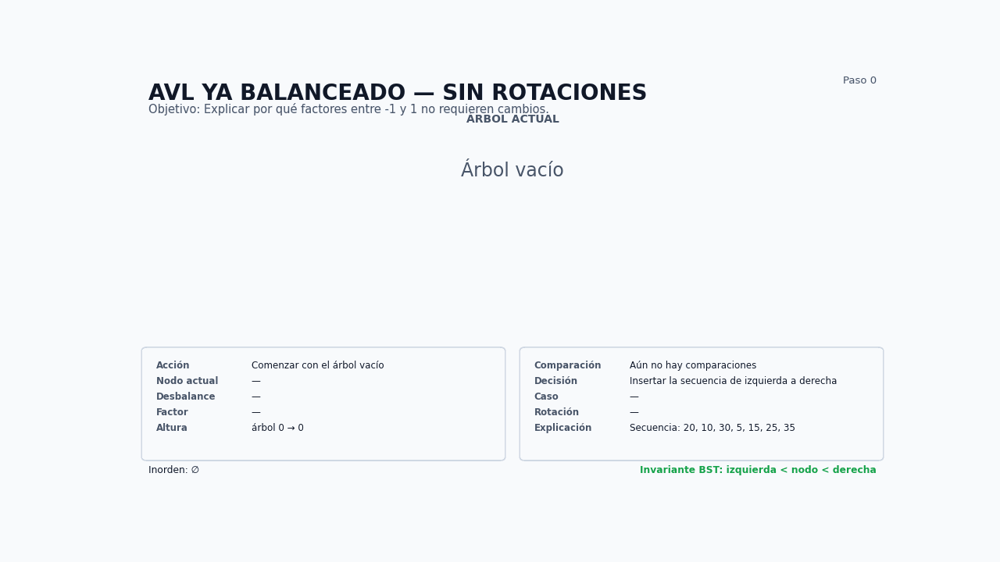
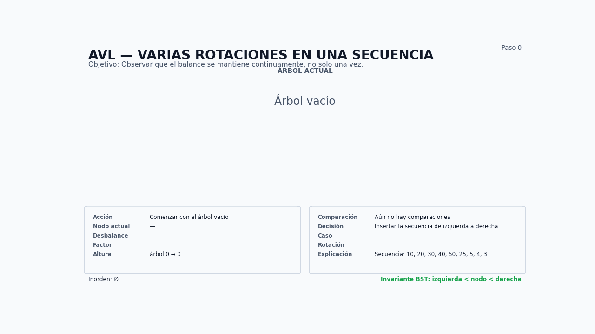
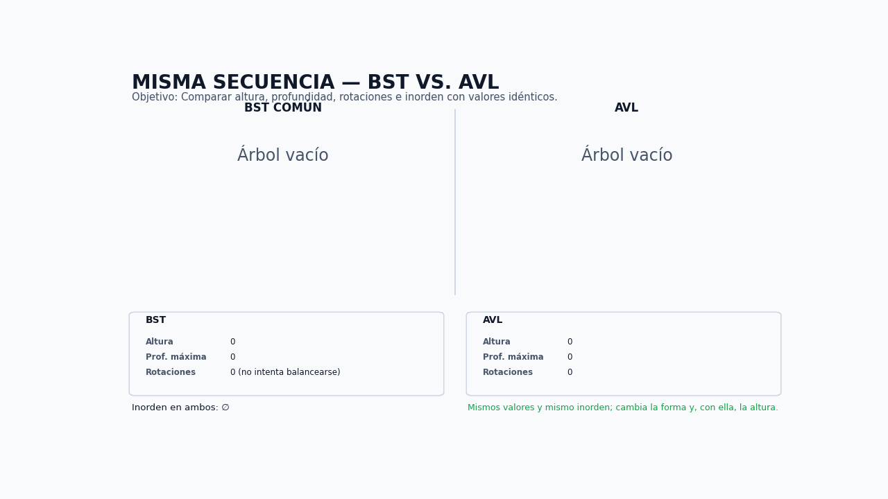

Estructuras de Datos
Balance continuo, rotaciones locales y el mismo orden BST.
Si un BST puede convertirse en una lista, ¿cómo podemos impedirlo?
FB(nodo) = altura(izquierdo) - altura(derecho)Raíz local, enlaces y altura.
Valores, orden relativo e inorden.

Secuencia: 30, 20, 10 · FB(30) = +2 · nueva raíz local: 20.
Nueve inserciones; solo cambia el subárbol desbalanceado.

El árbol se mantiene AVL antes de continuar con nuevas inserciones.
if balance > 1 and valor < nodo.izquierdo.valor:
return self._rotar_derecha(nodo)
Secuencia: 10, 20, 30 · FB(10) = -2 · nueva raíz local: 20.

La corrección no reorganiza el resto del árbol.
Alturas y factores se actualizan en cada regreso recursivo.
if balance < -1 and valor > nodo.derecho.valor:
return self._rotar_izquierda(nodo)
Secuencia: 30, 10, 20 · el pivote está en una posición interior.
Primero se prepara el subárbol; después se reduce su altura.
El inorden es idéntico antes, entre y después de las rotaciones.
if balance > 1 and valor > nodo.izquierdo.valor:
nodo.izquierdo = self._rotar_izquierda(nodo.izquierdo)
return self._rotar_derecha(nodo)
Secuencia: 10, 30, 20 · el pivote vuelve a ser el valor intermedio.
El resto del árbol conserva padres, hijos y orden.
El balance se restaura antes de aceptar la siguiente inserción.
if balance < -1 and valor < nodo.derecho.valor:
nodo.derecho = self._rotar_derecha(nodo.derecho)
return self._rotar_izquierda(nodo)
20, 10, 30, 5, 15, 25, 35 · todos los factores quedan en [-1, 1].

El mantenimiento es continuo: aparecen RR, RL y LL.

Mismo inorden; alturas y profundidades muy distintas.
A < x < B < y < CUna rotación cambia quién es la raíz local, pero A, B y C permanecen en el intervalo que les corresponde.
| Caso | Patrón de inserción | Factor | Corrección |
|---|---|---|---|
| LL | izquierda–izquierda | > 1 | derecha |
| RR | derecha–derecha | < -1 | izquierda |
| LR | izquierda–derecha | > 1 | izquierda + derecha |
| RL | derecha–izquierda | < -1 | derecha + izquierda |
nodo.altura = 1 + max(
altura(nodo.izquierdo),
altura(nodo.derecho),
)La altura se mantiene proporcional a log n porque el balance se corrige continuamente.
Observar, explicar, implementar AVL y probar invariantes.
Programar las animaciones.
notebook.md.¿Qué cambia una rotación, qué permanece igual y por qué eso mantiene eficiente al árbol?